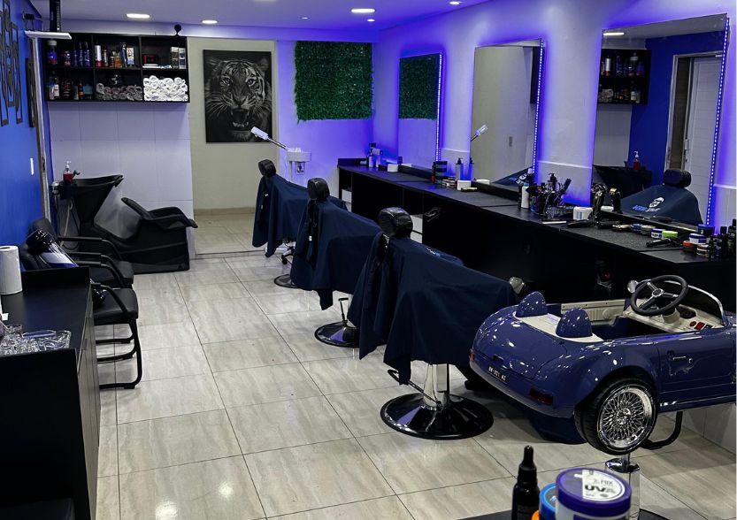

Na RK Elite Men, somos especializados em prótese capilar de alta qualidade. Nosso trabalho vai além da estética — transformamos vidas através da recuperação da autoestima e confiança.
Agendar Uma AvaliaçãoResultado indistinguível do cabelo natural.
Privacidade e discrição em todo processo.
Transformação que vai além da aparência.
Suporte contínuo e orientação completa.
Entendemos que a decisão de usar prótese capilar é pessoal e sensível. Por isso, oferecemos um atendimento completamente confidencial e personalizado, onde você pode tirar todas as suas dúvidas em um ambiente privativo e acolhedor.
Trabalhamos com os melhores materiais e técnicas mais avançadas do mercado, garantindo um resultado que não apenas parece natural, mas que realmente transforma a autoestima e a qualidade de vida de nossos clientes.
Avaliação personalizada e confidencial para entender suas necessidades.
Escolha do tipo, cor e estilo da prótese ideal para o seu perfil.
Fixação profissional, corte e orientações completas de cuidados.
Tire suas dúvidas sobre prótese capilar de forma simples.
Agende uma consulta gratuita e confidencial. Sem compromisso. Vamos encontrar a melhor solução para você.
AGENDAR CONSULTA GRATUITA